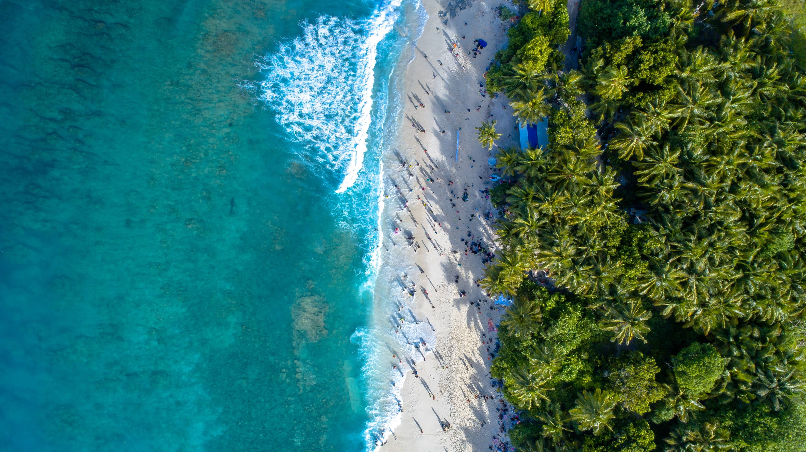

Explore
Kosgoda Beach, nestled along the beautiful coastline of Sri Lanka, is a stunning destination known for its pristine sandy shores and crystal-clear turquoise waters. With its tranquil atmosphere and natural beauty, Kosgoda Beach offers a serene escape for those seeking relaxation and rejuvenation.
Stretching for miles, the beach presents a picturesque setting where visitors can soak up the sun, stroll along the soft sands, and enjoy the gentle ocean breeze. The calm and inviting waters of the Indian Ocean make it an ideal spot for swimming, allowing visitors to cool off and enjoy a refreshing dip in the sea.


The Kosgoda Sea Turtle Conservation Project, located in the picturesque coastal town of Kosgoda, Sri Lanka, is a renowned hatchery dedicated to the preservation and protection of sea turtles. Established with the mission to conserve these magnificent creatures, the hatchery plays a vital role in raising awareness, conducting research, and implementing conservation measures.
At the Kosgoda hatchery, visitors have the unique opportunity to learn about the life cycle of sea turtles and witness the remarkable process of nesting, hatching, and releasing of baby turtles into the ocean. The knowledgeable staff and volunteers provide informative guided tours, offering valuable insights into the challenges faced by sea turtles and the conservation efforts undertaken to safeguard their future.
The hatchery serves as a safe haven for various species of sea turtles, including the Olive Ridley, Green, Loggerhead, Hawksbill, and Leatherback turtles. These gentle giants face numerous threats, such as habitat destruction, pollution, and poaching. The dedicated team at Kosgoda works tirelessly to protect the turtles, provide a nurturing environment for nesting, and ensure the survival of hatchlings.


Uncover the treasures of Galle, a UNESCO World Heritage Site, during this concise half-day private tour. Embark on a private boat safari through the enchanting mangrove forests of Bentota River. Witness the wonder of baby sea turtles at the Kosgoda Sea Turtle Conservation Project. Delve into the captivating history of Galle's Old Town and its impressive fortifications. Lastly, visit the Community Tsunami Museum for a poignant glimpse into the city's resilience. Experience the highlights of Galle in a concise and immersive adventure.

Galle, located in the southwest of Sri Lanka, is a vibrant coastal city that holds immense historical significance. It was once the bustling main port of the island until the Portuguese arrived in the 16th century. Today, Galle is celebrated as one of the country's most renowned beach destinations. As you explore this captivating city, keep an eye out for local fishermen selling their fresh catches along the roadside, while the breathtaking green and turquoise beaches that stretch along the coast captivate your senses. If you long to feel the soft sand between your toes, simply inform our chauffeur, who will gladly guide you to a perfect spot for relaxation.
Bentota Travel Mart (BTM) offers an exciting Yala Safari Day Trip for travelers staying in Bentota, Induruwa, Kosgoda, Ahungalla, Balapitiya, Ambalangoda, Hikkaduwa, Rathgama, Aluthgama, Beruwala, Maggona, Kalutara, Waskaduwa, and Wadduwa. This well-organized excursion includes convenient free pick-up and drop-off services from these areas. For those seeking an adventurous wildlife experience, Yala National Park is the ultimate destination, renowned for its incredible sightings of leopards, bears, elephants, and a diverse array of animals.

In the coastal village of Kosgoda, Sri Lanka, a captivating sight awaits visitors—the stilt fishermen. These skilled fishermen have mastered a unique fishing technique that has been passed down through generations. Perched precariously on wooden stilts, they cast their lines into the tranquil waters, patiently waiting for their catch. This age-old practice has become a symbol of the island's fishing heritage.